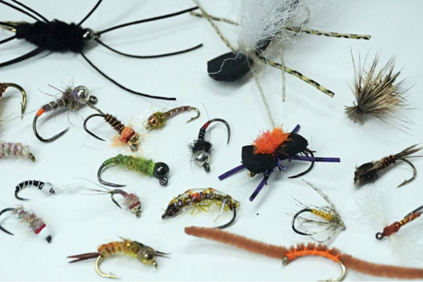

Flies! Flies! Flies!

Millions of choices! Not to worry!
What flies should I put in my box?
When you walk into a flyshop the amount of different flies can turn any man mad. These articles are to help you spend less time in the store or reaearching flies to use and more time in the water putting fish after fish in the net. Our atricles on dryflies, streamers, emergers, and nymphs will help you dial in what flies to throw in the different seasons, weather conditions, and waters.
How should I fish different flies?
Fiocchi Outdoors have out together the best flyfishing videos from the best of the best in the industry. These flyfishing videos will help any fisherman, new to flyfishing or have been flyfishing for years learn new techniques. Our dryfly, streamer, emerger, and nymph videos will show you new techniques that put fish in the net. Check out the latest streamer fishing video below.
Want to tie flies on your own?
There is noting like trying a fly at your desk at home and trickig a fish to eat it. Our fly tying section will show you all the tools and materials you need to tie any fly you need to put fish in the net. We provide all the materials you need for any fly. We also offer material kits for paticular flies so you not have to spend hours searching for what you need for the specific fly you want to tie.